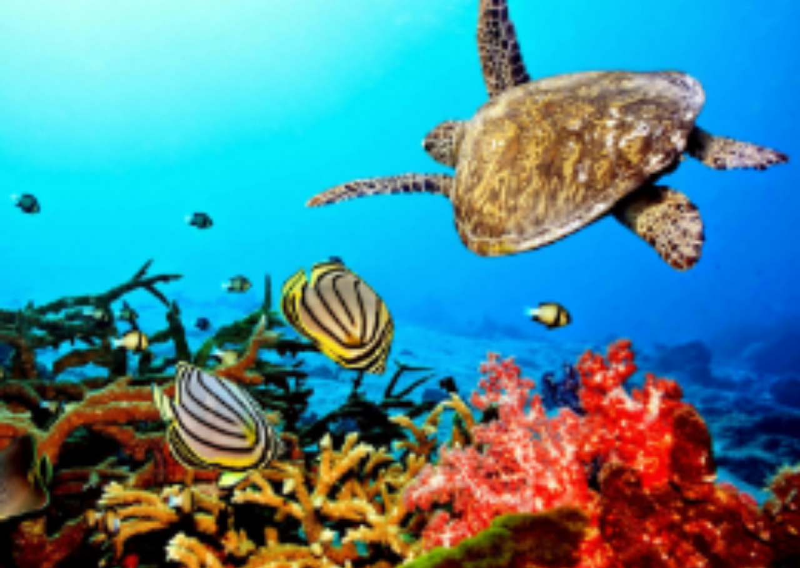
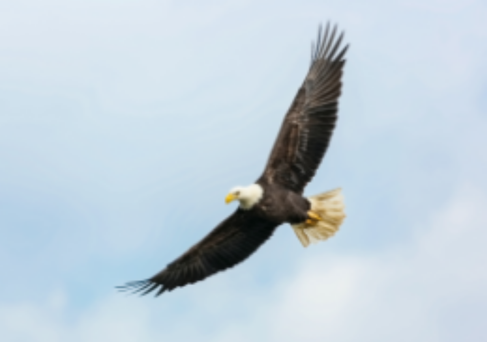
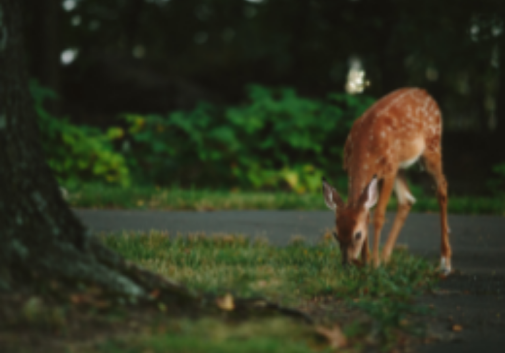
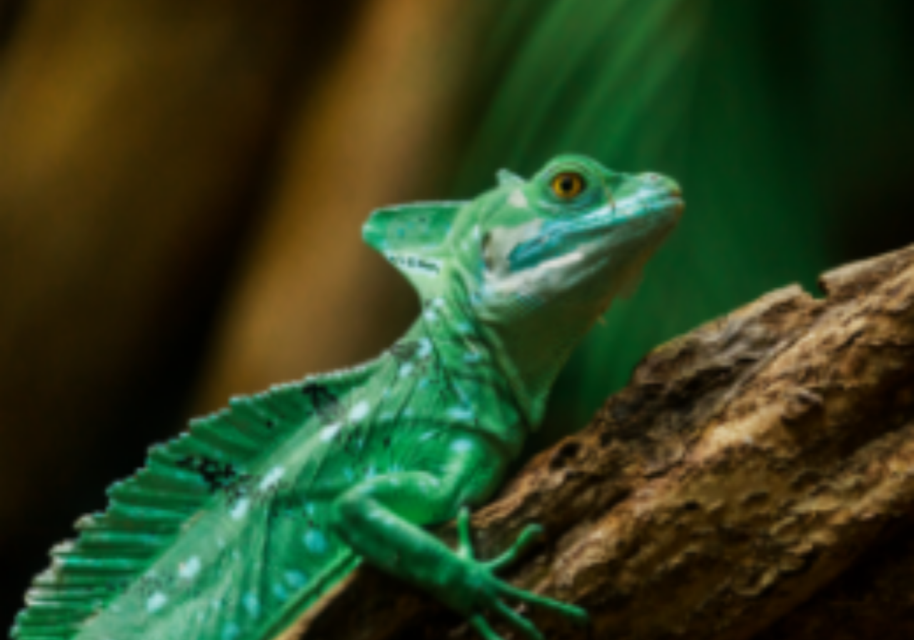

X close

Back Next
Gajah (Loxodonta)
Gajah adalah mamalia besar dari famili Elephantidae dan ordo Proboscidea.
Secara tradisional,terdaoat dua spesies yang diakui,yaitu gajah afrika dan gajah asia,walaupun beberapa bukti menunjukan bahwa gajahh semak afrika dan gajah hutan afrika adalah spesies yang berbeda.
Back Next


X close

Back
Bunglon (Chamaeleonidae)
Bunglon adalah sebutan khusus untuk jenis kadal/bengkarung yang memliki kemampuan mengubah warna kulitnya.
Secara umum,istilah "Bunglon" digunakan untuk menyebut kadal dari suku iguania termasuk Iguanidae,Agamidae,danChamaleonidae.
Istilah dalam bahasa inggris adalah Chamaleon atau Chamaeleon
Back